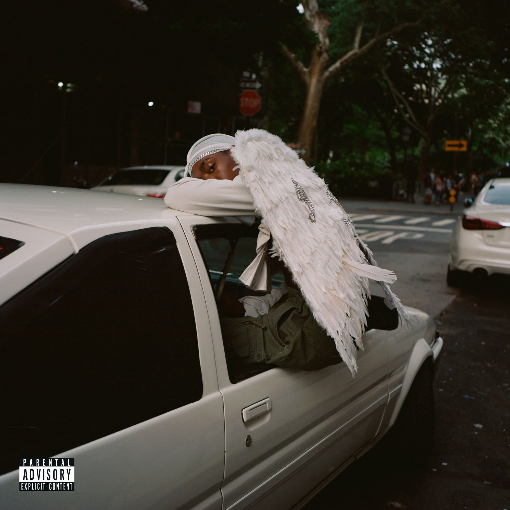

Cheers
Cheers
SINGER: Anderson .Paak
ALBUM: Oxnard, 2018
GENRE: Hip-Hop/Rap / R&B/Soul
 Not Enough
Not Enough
SINGER: Benny Sings
ALBUM: CITY MELODY, 2018
GENRE: Alternative

Hope
SINGER: Blood Orange (feat. Puff Daddy & Tei Shi)
ALBUM: Negro Swan, 2018
GENRE: Alternative
 Neon Moon
Neon Moon
SINGER: Cigarettes After Sex
ALBUM: Neon Moon, 2018
GENRE: Alternative
 Astoria
Astoria
SINGER: Far Caspian
ALBUM: The Heights, 2019
GENRE: Alternative
, Pt. 1 - Single.jpg) Take My Hand
Take My Hand
SINGER: JANNABI(잔나비)
ALBUM: Romance is a Bonus Book OST, 2019
GENRE: Kpop
 Chapter Six
Chapter Six
SINGER: Kendrick Lamar
ALBUM: Section.80, 2011
GENRE: Hip-Hop/Rap
 Seventeen Years
Seventeen Years
SINGER: Ratatat
ALBUM: Ratatat, 2004
GENRE: Alternative/ Rock
習慣(Cocooning)
SINGER: 詹森淮(Senhuai/Riva Jan)
ALBUM: 風景請別凋零, 2019
GENRE: Mandarin Pop
 N Side
N Side
SINGER: Steve Lacy
ALBUM: Apollo XXI, 2019
GENRE: R&B/Soul / Alternative / Pop
 In The Zoo
In The Zoo
SINGER: Suchmos
ALBUM: The Anymal, 2019
GENRE: Alternative / Pop
 FIND YOUR WING
FIND YOUR WING
SINGER: Tyler, The Creator
ALBUM: Cherry Bomb, 2015
GENRE: Hip-Hop/Rap / Jazz / R&B/Soul
 Are You Bored Yet?
Are You Bored Yet?
SINGER: Wallows(Feat. Clairo)
ALBUM: Nothing Happens, 2019
GENRE: Alternative